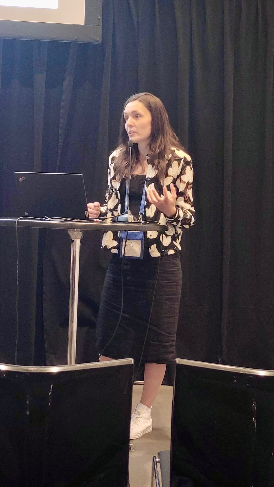

Nature & cities
How people value urban nature—and how better stories and business models can help nature-based solutions take root.

My research asks how marketing can help people, organisations, and places move towards a more sustainable future.
I am an Associate Professor at Utrecht University School of Economics. My work brings together consumer behaviour, business models, and social and ecological impact. I study nature-based solutions, sharing and mobility, and the ways we communicate sustainable change.
Across research and teaching, I work with people from different disciplines and sectors to turn new perspectives into practical possibilities.
View my Utrecht University profileThree connected lines of inquiry, one shared question: how do we create change that lasts?
How people value urban nature—and how better stories and business models can help nature-based solutions take root.
What motivates people to share, travel differently, and adopt new services that use resources more thoughtfully.
How marketing, technology, and alternative ways of consuming can support more sustainable behaviour.
CURRENT & ONGOING WORK
Working across disciplines and borders to rethink how we value nature, share resources, and build a fairer economy.
A selection of recent work across marketing, social impact, and sustainable systems.

In the classroom, I connect theory with the questions that shape the world beyond it.
Marketing perspectives for creating sustainable impact.
Business models, platforms, and their implications for society.
Programme coordination and interdisciplinary learning.
COLLABORATION BEGINS HERE
I welcome conversations about research, teaching, and collaborations that make a difference.
k.merfeld@uu.nl